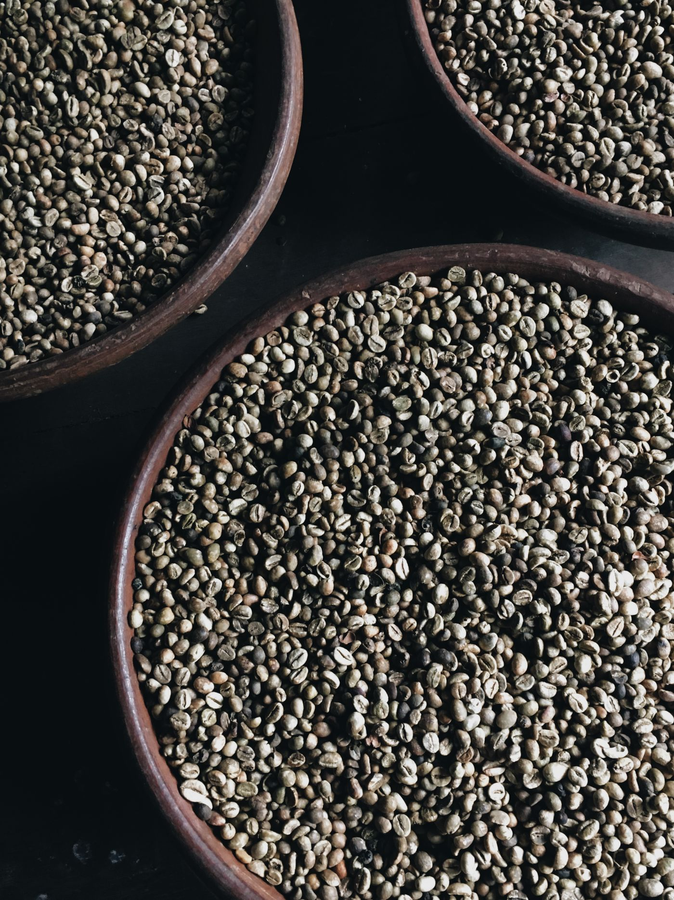
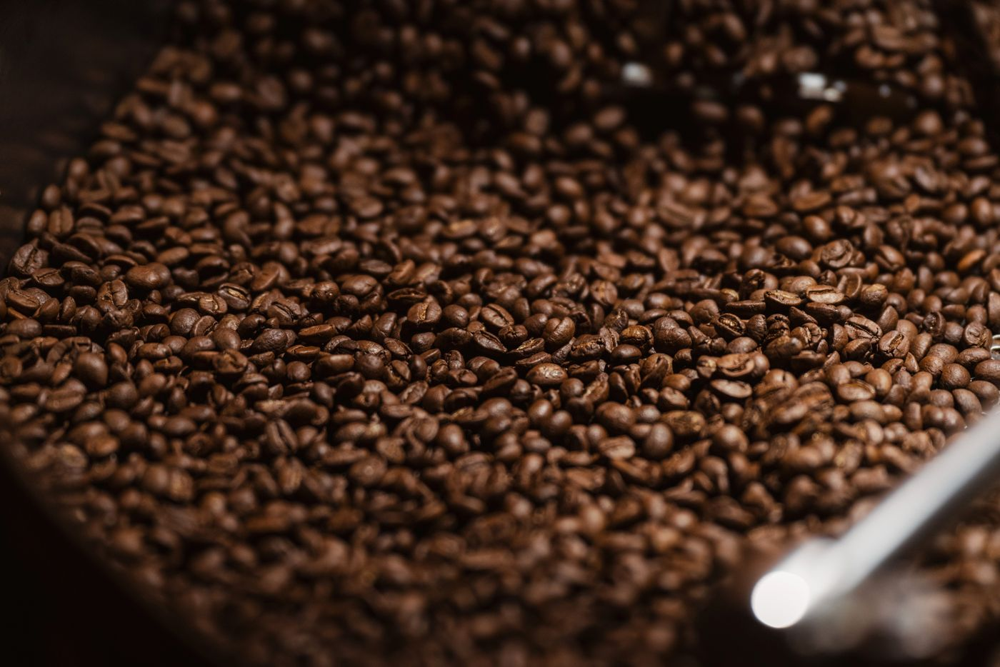
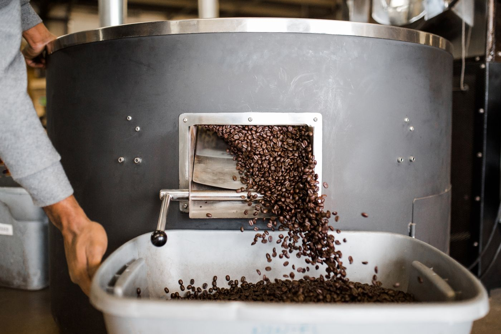

Kaffeerösterei · Musterstadt
Langsam geröstet. Sofort gemocht.
Wir rösten in kleinen Chargen von 12 Kilo – vierzehn Minuten im Trommelröster, jeden Dienstag und Donnerstag. Was heute aus der Trommel kommt, steht übermorgen bei Ihnen in der Küche.
Röstprofil · Charge 0412
Vierzehn Minuten, die alles entscheiden
Zeit00:00
Bohne200 °C
PhaseEinfüllen
- TrocknungWasser verdampft
- MaillardAromen entstehen
- First CrackBohnen knacken
- EntwicklungSüße wird rund


Röstgradroh
Sorten
Vier Kaffees. Kein Füllstoff.
Geschmacksfinder
Wie mögen Sie Ihren Kaffee?
Drei Regler, eine Empfehlung. Die Werte vergleichen wir mit unseren Verkostungsnotizen.
Zubereitung
Kaffee-Abo
Immer frisch, nie leer
Geröstet am Dienstag, verschickt am Mittwoch. Jederzeit pausieren oder kündigen.

Sorte
Menge pro Lieferung
Lieferung alle
ca. 1,1 Tassen am Tag
16,90 €Beispiel-Website: Es wird nichts bestellt.
Besuch
Kommen Sie vorbei
Café & Laden
Jetzt geöffnet
| Montag | geschlossen |
| Di – Fr | 8:00 – 18:00 |
| Samstag | 9:00 – 16:00 |
| Sonntag | 10:00 – 14:00 |
Röstung zum Zuschauen
Jeden Donnerstag um 10 Uhr dürfen Sie neben dem Röster stehen. Wir erklären, was passiert, und Sie probieren die frische Charge.
Kostenlos · ohne AnmeldungAdresse
Musterweg 7
12345 Musterstadt
Im Hinterhof, der Duft zeigt den Weg.